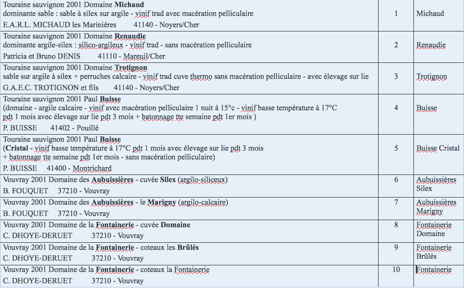

Chapter 6 Homework: exploratory analysis
6.1 Wine tasting
Let us consider a sensory analysis where judges assessed some products (here wines). They assigned ratings on sensory descriptors such as odor of fruit, taste of mushroom, sweetness, etc, ranging from 0 (the wine is not sweet at all) to 10 (the wine is very sweet). They also gave their hedonic appreciation. Using people and not only physico-chemical measurements is crucial for such studies since human sensations might not match scientific measurements. Such analyses can be used to characterize products (to put labels on the bottles), to position the wines relatively to one another (could you say that sauvignon wines are different from other white wines ?), to link the hedonic appreciation to the organoleptic composition of the products, etc. This study concerns 10 white wines,

that were described by 11 judges (our students!.. one aim of the data analysis was also to know if naive consumers are able to describe the wines as well as the experts - we will also study the experts’ data later) using 17 sensory descriptors. The students assessed the wines on two different days (this is a very common practice. Indeed you may be on a better mood one day and put higher scores, or the temperature in the room may be different which modifies the perception, etc..). To account for such effects, experiments are often organized using “experimental design” (experimental design is a very crucial field in statistics and deeply rooted in the core of statistical thinking; Fisher started with agronomy experiences). For instance, each judge did not taste the products in the same order (to avoid rank 1 effects, or a succession effect (carry-over effect) if wine 2 is always assessed after wine 1..). The wine data is representative of many sensory data used to describe products (yogurts, cosmetics, but also different rings of cellphones, etc) in many companies Danone, L’Oreal, Nestlé, etc..
Import the data composed of 3 files vins_u.csv, nom_vins.csv, nom_juges.csv.
Using the ‘merge’ function, create one data set with the names of the wines and judges. Be careful, it could be a bit tricky with levels.
The aim of this case study is to use some descriptive statistics and plots to give first answers to the following questions. Note that G stands for Gout (taste) and O for Odor.
Which wine is the most appreciated?
Is there a relation between sweetness and appreciation?
Is it the same relation for men and women? Who prefers sweet wines?
Is the astringency perceived in the same way by men and women?
Are the preferences modified from the firt session (seance) to the second one?
Extract the indices of the descriptors (non categorical variables).
Create a data table with wines as rows, descriptors as columns and the mean given by the judges.
Could you describe the main differences between Sauvignon and Vouvray. Comment your claims.
Could you explain what are the characteristics of the wine which is preferred? Suggest a way to give the identity card of a wine.
Remark: the product effect might depend on the judge. In other words, the notations of the judges for one product and one descriptor might disagree. Do the judges assess O.Fruitpassion in the same way? Is it a problem? You should have a look at the judge florence for instance and the wine Trotignon. This is called an interaction (interaction between product effect and judge effect).
This example will be continued in subsequent homeworks with the oenologues data and incomplete information. Indeed, given the difficulty in assessing a large number of wines (due to a sensory fatigue, a saturation phenomenon after tasting many wines even if the people split), each judge evaluates only a subset of products. This subset is determined by experimental design (Balanced Incomplete Block type). This induces missing (incomplete) information in the data to be analyzed.
6.2 Management of severe trauma patients
The aim of the study is to model the decisions and events when severe trauma patients are handled by emergency doctors. Indeed, underestimating the severity of the patient’s condition can be dramatic, while overestimating it leads to monopolizing an entire medical crew and therefore longer waiting times for other patients of the hospital. The main issue is to predict whether or not the patient risks a hemorrhagic shock. We have at disposal data which consist in the aggregation of several registers of severe trauma patients from Ile de France. More than 6000 patients and the details of their medical support are registered in this data set. The purpose of this case study is to import and explore the data using graphs and descriptive statistics.
Each patient is described by 10 variables (selected out of the 147 variables of the data set):
- BMI (Body Mass Index): the body mass divided by the square of the body height. The BMI is an attempt to quantify the amount of tissue mass, and to categorize the patient as underweight, normal weight, overweight, or obese.
- Glasgow.initial: score between 3 and 15 linked to the head trauma gravity. (it includes motor and verbal responses and eye-opening).
- PAS.min (Pression Artérielle Systolique): minimal blood pressure during heart contraction phase (systole).
- PAD.min (Pression Artérielle Diastolique): minimal blood pressure during heart relaxation phase (diastole).
- FC.max (Fréquence Cardiaque): maximal heart frequency. Low PAS, PAD and high FC correspond to a risk of hemorrhagic shock.
- SpO2.min (Saturation pulsée en Oxygène): oxygen saturation rate, reflecting blood oxygenation. Low, it has two explanations: a lung injury or a weak cardiac flow.
- Hemocue.init: initial hemoglobine measured by blood sample on the finger top.
- IGS.II (Indice de Gravité Simplifié): empirical gravity index calculated from 15 parameters. It quantifies the degree of gravity of the patient, depending on his personal and physiological constants.
- Discordance: compares the prediction made by the emergency doctors on whether or not the patient risks an hemorrhagic shock with whether or not it happened. There are 4 levels: ** PDSC** (True negative) - physicians predicted no hemorrhagic shock and none occurred. ** PDAC** (True positive) - physicians predicted an hemorrhagic shock and one occurred. ** MGA** (False positive) - physicians predicted an hemorrhagic shock and none occurred. ** PGA** (False negative) - physicians predicted no hemorrhagic shock and one occurred.
- Mecanisme: describes the nature of the accident (car accident, fall, etc.). This is a categorical variable with 12 categories.
6.2.1 Question 1 - distribution of missing data
This data set inherently contains missing data that are missing for different reasons. It is important for the analysis to be able differentiate the different types of missing data. The missing values have therefore been categorized subsequently: NA (Non Applicable), NR (Non Renseigné) - corresponding to data that were not filled in, IMP (Impossible) - corresponding to data that were impossible to measure. Before analyzing the data further, it is useful to have an idea of which data is missing (for instance, do all variables have missing values ? of which kind ?).
Import the data set trauma_HWK1.csv.
Using graphics, represent the distribution of the missing data accross variables and accross missing data types. Comment.
6.2.2 Question 2 - dealing with missing data
In the sequel, all the missing values are considered as NA. Create a new data frame where all the missing values (NA, NR, IMP) have been replaced by NA or (it should be easier) import again the data by specifying the characters considered as missing.
Among common approaches to deal with missing values, one consists in replacing the missing values by the mean of the column (for a quantitative variable) or by the most probable category (for a categorical variable). One can also remove all the individuals that contain a missing value. Comment the previous methods. Choose one of these methods or any other one of your choice and store the processed data in a new dataframe.
6.2.3 Question 3 - exploration of the data
Using descriptives statistics and graphs, give elements of answers for the following questions.
Which accidents (Mecanisme) are the most common?
Using statistics and graphs for the discordance variable, comment the performance of the physicians diagnosis.
describe the relationship between the errors (Discordance) and the type of accident (Mecanisme).
Which type of accidents corresponds to the highest false negative rate ?
Represent the relationship between the type of accident (Mecanisme) and the gravity of the condition (Glasgow.initial) using density plots. Comment.
Which type of accident leads to the most severe condition on average ?
Represent the variability of the hemoglobine rate Hemocue.init overall and per accident type (Mecanisme). Comment.
6.3 Prediction of Chicago criminality
This dataset reflects reported incidents of crime (with the exception of murders) that occurred in the City of Chicago from 2001 to present. Data is extracted from the Chicago Police Department’s CLEAR (Citizen Law Enforcement Analysis and Reporting) system. The goal is to use the data to predict new crimes and optimize the schedule and route of police patrols. The purpose of this case study is to practice R tools to produce maps.
6.3.1 Question 1 - load the dataset
You should first of all import the dataset crimes_HWK1_reduced.csv and the ggmap library.
#install.packages("ggmap")## Loading required package: ggplot2Every criminal case is referenced by 18 variables that include
- Case.Number: the reference number of the criminal case.
- Date
- Block: location of the crime at the block level.
- Primary.Type: type of crime (theft, assault, burglary, etc.). This is a categorical variable
- Arrest: boolean indicating whether or not the culprit was arrested.
- Latitude, Longitude and Location (Location=(Latitude, Longitude)).
6.3.2 Question 2 - descriptive statistics
Represent graphically the relationship between arrests and crime type, for crimes of burglary, narcotics, prostitution and kidnapping. Comment.
Which is the most frequent type of crime according to this data set ?
6.3.3 Question 3 - first maps
You can use the ggmap library to represent locations on a map. The coordinates must be stored in a data frame.
hdf <- get_map("chicago, illinois")
lon <- c(-87.9, -87.6)
lat <- c(41.9,41.65)
chkpts <- data.frame(lon,lat)
names(chkpts) <- c("lon", "lat")
ggmap(hdf, extent = "normal") +
geom_point(aes(x = lon, y = lat, color="red"), data = chkpts, alpha = 1)Extract the extremal locations in terms of latitude and longitude and plot them together on the map of Chicago. First you must convert the values of Longitude and Latitude to numerics.
6.3.4 Question 4 - density plots
Extract the crimes that took place on May 3. 2003 (05/03/2003) and represent them on the map with a density plot. Hint: check the grepl and stat_density2d functions
Represent the crime density for burglaries, narcotics, prostitution and kidnapping. Comment
Extract the crimes that occurred in 2002. Represent the crime density for every month of the year.
Plot the density of all crimes per value of Arrest. Comment.